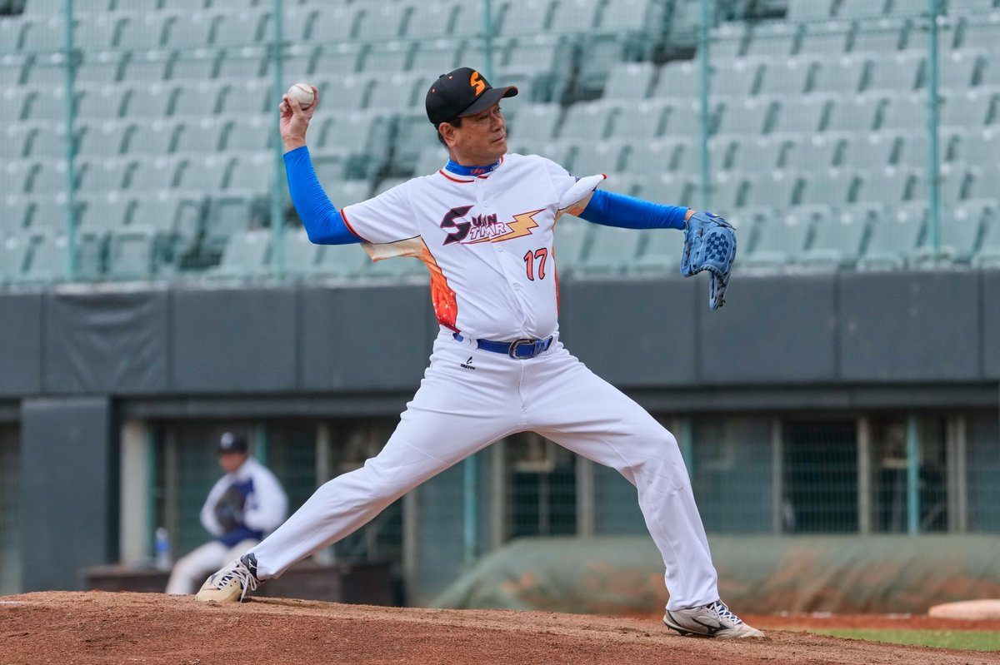

孫協志SUN STAR明星公益棒球賽11/14首戰花蓮

可樂電子報小編/編輯
由藝人孫協志創辦的SUN STAR明星棒球隊，將於11月14日下午4時30分在花蓮縣立德興棒球場舉辦公益棒球賽，這是球隊成軍第21年首度前進花蓮，也是花蓮史上第一場明星公益棒球賽。市長魏嘉彥邀請鄉親當天進場，用掌聲與樂捐發票一起做公益，把溫暖送給熱愛棒球的孩子，讓運動與慈善在花蓮相遇。

SUN STAR明星棒球隊長年以明星公益棒球賽推廣慈善精神，廣受球迷與粉絲好評，並已成為每年年底的固定賽事。今年迎來成軍第21年，球隊決定踏出全新一步，前往從未踏足的花蓮舉辦公益棒球賽，希望將藝人球員的棒球公益足跡與慈善精神帶到花蓮，讓更多在地球迷感受運動公益的溫度。
這次活動陣容堅強，由隊長孫協志領軍，藝人成員包括浩角翔起阿翔、阿Ben白吉勝、羅平、寶弟葛兆恩、郭忠祐、演員李飛、王霆晏、王盈凱等人。球隊結合演藝與棒球魅力，期許透過明星賽事吸引更多民眾進場，為花蓮帶來運動觀光與公益能量，也讓花蓮鄉親近距離欣賞藝人球員的球技風采。

本場賽事邀請11位OB傳奇球星，依加盟職棒排序為吳俊達、劉義傳、陳義信、黃忠義、劉文貿、吳佳榮、黃龍義、張志強、陽東益、羅國華、吳佳燕；其中人氣居高不下的前職棒假日飛刀手陳義信將先發，吳佳燕則為特邀女性球員，曾是2004、2008奧運國手與2006亞運國手，並曾獲2019女子企壘聯賽年度MVP。
花蓮市長魏嘉彥表示，2025年年底透過新城鄉民代表傅緯豪與花蓮縣議員魏嘉賢介紹結識SUN STAR明星棒球隊，當時球隊展現想在花蓮舉辦公益賽的強烈意願。領隊陳齊祥與藝人羅平多次前往花蓮球場會勘，市公所大力支持協助促成，盼延續運動觀光、慢活城市與有愛花蓮、和諧共融目標，讓花蓮市持續朝向多元融合的城市發展方向邁進。

領隊陳齊祥感謝花蓮市公所協助，也特別感謝魏嘉賢議員及辦公室同仁年初場勘時的陪同與建議，以及新城鄉民代表傅緯豪協辦，並感謝武賞餐飲集團提供獎品，鼓勵民眾多多進場支持公益賽事。他強調路途遙遠但仍願意前來花蓮，希望透過這場賽事把更多公益能量帶到東部地區，回饋在地球迷與鄉親。
今年公益受贈單位為臺灣幼兒棒球聯盟協會，榮譽理事長謝長亨與理事長江皇樺替熱愛棒壘球的身障孩子圓夢，顯恩小光芒身障幼兒棒球隊也將到場同樂。比賽不售票，樂捐5張11至12月實體紙本發票即可免費入場；15時開放入場、16時30分開打，相關訊息可至臉書粉專「Classic Star經典明星公益棒球賽」或「花蓮市公所」查詢。

🌟 掌握花蓮在地第一手資訊・歡迎訂閱追蹤
深度紀實報導、在地精采影音專題，第一時間接收最新消息！